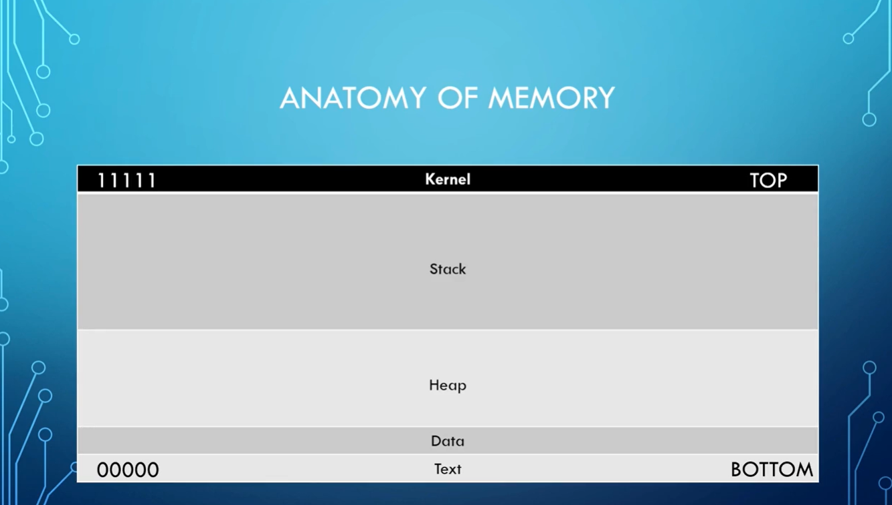

Will Not use our host Machine as Victime instead will download the Windows 10 and run it in a Vmware.
https://discord.com/channels/542352179059752970/721851874327920800/899474405074296872


Steps To Conduct a Buffer Flow :
1- Spiking : Method that we are going to use to find a vulnerable part of a program And once we are able to find the vulnerable part of the program will do fuzzing.
2- Fuzzing : Similar to Spiking but here will send a bunch of character's at a program and see if we can break it.
3- Finding The Offset : if we do break it we want to find out at what point we did break it.
4- Overwriting the EIP : We could use that offset to overwrite the EIP (i.e. the pointer address)
5- Finding The Bad Character :
6- Finding The Right Module :
When we have information from 5 and 6 we can generate the shell code (i.e. Malcious shell code) that will allow us to get the reverse shell.
Using that will point the EIP to malcious shell code and hopefully will gain root.
7- Generating The Shellcode :
8 - Root